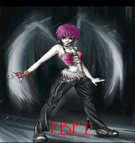

Forums galactiques > Taverne galactique : lieu de discussion informel > jeu HRP 2
Pages : 1 2 ... 11 12 13 ... 25 26
| Kaelgad Réputation à la taverne : 97  29/08 ETU 13:35 | Score : 0 Détails C'était un petit archange tombé du ciel car il avait perdu ses ailes en s'accrochant dans les branches d'une masse ionisante envoyé par bal qui avait cru que c'était kaelgad qui l'avait envoyé car bal avait perdu ces chaussette qu il portait 6 mois par ans car elles étaient censé etre un porte bonheur mais au contraire elles lui enlevaient sa grande cape noir pour montrer un horrible visage envahi par les trichophecals qui n'avaient qu'un seul souhait :
Faire des trou dans la chaire des etre "mauvais". Malhaureusement ,le pauvre arcange tomba sur un groupe d'arcanges déchus doté de pouvoirs chapsiques qui pouvait faire taire Iriki ,mais celle-ci... | ||
| Iriki Réputation à la taverne : 11  29/08 ETU 13:36 | Score : 0 Détails C'était un petit archange tombé du ciel car il avait perdu ses ailes en s'accrochant dans les branches d'une masse ionisante envoyé par bal qui avait cru que c'était kaelgad qui l'avait envoyé car bal avait perdu ces chaussette qu il portait 6 mois par ans car elles étaient censé etre un porte bonheur mais au contraire elles lui enlevaient sa grande cape noir pour montrer un horrible visage envahi par les trichophecals qui n'avaient qu'un seul souhait :
Faire des trou dans la chaire des etre "mauvais". Malhaureusement ,le pauvre arcange tomba sur un groupe d'arcanges déchus doté de pouvoirs chapsiques qui pouvait faire taire Iriki ,mais celle-ci était moins stupide que dark-maul ... | ||
| Alpha_04 Réputation à la taverne : 23  29/08 ETU 13:37 | Score : 0 Détails
C'était un petit archange tombé du ciel car il avait perdu ses ailes en s'accrochant dans les branches d'une masse ionisante envoyé par bal qui avait cru que c'était kaelgad qui l'avait envoyé car bal avait perdu ces chaussette qu il portait 6 mois par ans car elles étaient censé etre un porte bonheur mais au contraire elles lui enlevaient sa grande cape noir pour montrer un horrible visage envahi par les trichophecals qui n'avaient qu'un seul souhait : Faire des trou dans la chaire des etre "mauvais". Malhaureusement ,le pauvre arcange tomba sur un groupe d'arcanges déchus doté de pouvoirs chapsiques qui pouvait faire taire Iriki ,mais celle-ci était moins stupide que dark-maul et en conclu un pacte... | ||
| Kaelgad Réputation à la taverne : 97 29/08 ETU 13:59 | Score : 0 Détails C'était un petit archange tombé du ciel car il avait perdu ses ailes en s'accrochant dans les branches d'une masse ionisante envoyé par bal qui avait cru que c'était kaelgad qui l'avait envoyé car bal avait perdu ces chaussette qu il portait 6 mois par ans car elles étaient censé etre un porte bonheur mais au contraire elles lui enlevaient sa grande cape noir pour montrer un horrible visage envahi par les trichophecals qui n'avaient qu'un seul souhait :
Faire des trou dans la chaire des etre "mauvais". Malhaureusement ,le pauvre arcange tomba sur un groupe d'arcanges déchus doté de pouvoirs chapsiques qui pouvait faire taire Iriki ,mais celle-ci était moins stupide que dark-maul et en conclu un pacte avec Alpha_04 qui se précipita sur... | ||
| Alpha_04 Réputation à la taverne : 23 29/08 ETU 14:01 | Score : 0 Détails C'était un petit archange tombé du ciel car il avait perdu ses ailes en s'accrochant dans les branches d'une masse ionisante envoyé par bal qui avait cru que c'était kaelgad qui l'avait envoyé car bal avait perdu ces chaussette qu il portait 6 mois par ans car elles étaient censé etre un porte bonheur mais au contraire elles lui enlevaient sa grande cape noir pour montrer un horrible visage envahi par les trichophecals qui n'avaient qu'un seul souhait :
Faire des trou dans la chaire des etre "mauvais". Malhaureusement ,le pauvre arcange tomba sur un groupe d'arcanges déchus doté de pouvoirs chapsiques qui pouvait faire taire Iriki ,mais celle-ci était moins stupide que dark-maul et en conclu un pacte avec Alpha_04 qui se précipita sur l'ordinateur pour envoyer un message de paix a Iriki puis ils... | ||
| Kaelgad Réputation à la taverne : 97 29/08 ETU 14:04 | Score : 0 Détails C'était un petit archange tombé du ciel car il avait perdu ses ailes en s'accrochant dans les branches d'une masse ionisante envoyé par bal qui avait cru que c'était kaelgad qui l'avait envoyé car bal avait perdu ces chaussette qu il portait 6 mois par ans car elles étaient censé etre un porte bonheur mais au contraire elles lui enlevaient sa grande cape noir pour montrer un horrible visage envahi par les trichophecals qui n'avaient qu'un seul souhait :
Faire des trou dans la chaire des etre "mauvais". Malhaureusement ,le pauvre arcange tomba sur un groupe d'arcanges déchus doté de pouvoirs chapsiques qui pouvait faire taire Iriki ,mais celle-ci était moins stupide que dark-maul et en conclu un pacte avec Alpha_04 qui se précipita sur l'ordinateur pour envoyer un message de paix a Iriki puis ils conclurent une rapide alliance contre dark maul pour... | ||
| Alpha_04 Réputation à la taverne : 23 29/08 ETU 14:05 | Score : 0 Détails C'était un petit archange tombé du ciel car il avait perdu ses ailes en s'accrochant dans les branches d'une masse ionisante envoyé par bal qui avait cru que c'était kaelgad qui l'avait envoyé car bal avait perdu ces chaussette qu il portait 6 mois par ans car elles étaient censé etre un porte bonheur mais au contraire elles lui enlevaient sa grande cape noir pour montrer un horrible visage envahi par les trichophecals qui n'avaient qu'un seul souhait :
Faire des trou dans la chaire des etre "mauvais". Malhaureusement ,le pauvre arcange tomba sur un groupe d'arcanges déchus doté de pouvoirs chapsiques qui pouvait faire taire Iriki ,mais celle-ci était moins stupide que dark-maul et en conclu un pacte avec Alpha_04 qui se précipita sur l'ordinateur pour envoyer un message de paix a Iriki puis ils conclurent une rapide alliance contre dark maul pour l'invité a son tour parmi eux et ils... | ||
| Kaelgad Réputation à la taverne : 97 29/08 ETU 14:07 | Score : 1 Détails C'était un petit archange tombé du ciel car il avait perdu ses ailes en s'accrochant dans les branches d'une masse ionisante envoyé par bal qui avait cru que c'était kaelgad qui l'avait envoyé car bal avait perdu ces chaussette qu il portait 6 mois par ans car elles étaient censé etre un porte bonheur mais au contraire elles lui enlevaient sa grande cape noir pour montrer un horrible visage envahi par les trichophecals qui n'avaient qu'un seul souhait :
Faire des trou dans la chaire des etre "mauvais". Malhaureusement ,le pauvre arcange tomba sur un groupe d'arcanges déchus doté de pouvoirs chapsiques qui pouvait faire taire Iriki ,mais celle-ci était moins stupide que dark-maul et en conclu un pacte avec Alpha_04 qui se précipita sur l'ordinateur pour envoyer un message de paix a Iriki puis ils conclurent une rapide alliance contre dark maul pour l'invité a son tour parmi eux et ils lui tendirent en fait un piege parce que Dark Maul était un commandant qu'ils n'appréciait pas a cause ... | ||
| Iriki Réputation à la taverne : 11 29/08 ETU 14:08 | Score : 0 Détails C'était un petit archange tombé du ciel car il avait perdu ses ailes en s'accrochant dans les branches d'une masse ionisante envoyé par bal qui avait cru que c'était kaelgad qui l'avait envoyé car bal avait perdu ces chaussette qu il portait 6 mois par ans car elles étaient censé etre un porte bonheur mais au contraire elles lui enlevaient sa grande cape noir pour montrer un horrible visage envahi par les trichophecals qui n'avaient qu'un seul souhait :
Faire des trou dans la chaire des etre "mauvais". Malhaureusement ,le pauvre arcange tomba sur un groupe d'arcanges déchus doté de pouvoirs chapsiques qui pouvait faire taire Iriki ,mais celle-ci était moins stupide que dark-maul et en conclu un pacte avec Alpha_04 qui se précipita sur l'ordinateur pour envoyer un message de paix a Iriki puis ils conclurent une rapide alliance contre dark maul pour l'invité a son tour parmi eux et ils lui tendirent en fait un piege parce que Dark Maul était un commandant qu'ils n'appréciait pas a cause que celui ci est un boulet et .... | ||
| Alpha_04 Réputation à la taverne : 23 29/08 ETU 14:09 | Score : 0 Détails C'était un petit archange tombé du ciel car il avait perdu ses ailes en s'accrochant dans les branches d'une masse ionisante envoyé par bal qui avait cru que c'était kaelgad qui l'avait envoyé car bal avait perdu ces chaussette qu il portait 6 mois par ans car elles étaient censé etre un porte bonheur mais au contraire elles lui enlevaient sa grande cape noir pour montrer un horrible visage envahi par les trichophecals qui n'avaient qu'un seul souhait :
Faire des trou dans la chaire des etre "mauvais". Malhaureusement ,le pauvre arcange tomba sur un groupe d'arcanges déchus doté de pouvoirs chapsiques qui pouvait faire taire Iriki ,mais celle-ci était moins stupide que dark-maul et en conclu un pacte avec Alpha_04 qui se précipita sur l'ordinateur pour envoyer un message de paix a Iriki puis ils conclurent une rapide alliance contre dark maul pour l'invité a son tour parmi eux et ils lui tendirent en fait un piege parce que Dark Maul était un commandant qu'ils n'appréciait pas a cause que celui ci est un boulet et Iriki se mit a l'aimé.. | ||
| Kaelgad Réputation à la taverne : 97 29/08 ETU 14:12 | Score : 1 Détails Hey oh !
Je prend quelle suite là ? | ||
| Alpha_04 Réputation à la taverne : 23 29/08 ETU 14:13 | Score : 0 Détails J'ais rectifié pardonnez mon erreur.
| ||
| Alpha_04 Réputation à la taverne : 23 29/08 ETU 14:14 | Score : 0 Détails C'était un petit archange tombé du ciel car il avait perdu ses ailes en s'accrochant dans les branches d'une masse ionisante envoyé par bal qui avait cru que c'était kaelgad qui l'avait envoyé car bal avait perdu ces chaussette qu il portait 6 mois par ans car elles étaient censé etre un porte bonheur mais au contraire elles lui enlevaient sa grande cape noir pour montrer un horrible visage envahi par les trichophecals qui n'avaient qu'un seul souhait :
Faire des trou dans la chaire des etre "mauvais". Malhaureusement ,le pauvre arcange tomba sur un groupe d'arcanges déchus doté de pouvoirs chapsiques qui pouvait faire taire Iriki ,mais celle-ci était moins stupide que dark-maul et en conclu un pacte avec Alpha_04 qui se précipita sur l'ordinateur pour envoyer un message de paix a Iriki puis ils conclurent une rapide alliance contre dark maul pour l'invité a son tour parmi eux et ils lui tendirent en fait un piege parce que Dark Maul était un commandant qu'ils n'appréciait pas a cause que celui ci est un boulet et Iriki se mit a l'aimé.. | ||
| Kaelgad Réputation à la taverne : 97 29/08 ETU 14:26 | Score : 1 Détails C'était un petit archange tombé du ciel car il avait perdu ses ailes en s'accrochant dans les branches d'une masse ionisante envoyé par bal qui avait cru que c'était kaelgad qui l'avait envoyé car bal avait perdu ces chaussette qu il portait 6 mois par ans car elles étaient censé etre un porte bonheur mais au contraire elles lui enlevaient sa grande cape noir pour montrer un horrible visage envahi par les trichophecals qui n'avaient qu'un seul souhait :
Faire des trou dans la chaire des etre "mauvais". Malhaureusement ,le pauvre arcange tomba sur un groupe d'arcanges déchus doté de pouvoirs chapsiques qui pouvait faire taire Iriki ,mais celle-ci était moins stupide que dark-maul et en conclu un pacte avec Alpha_04 qui se précipita sur l'ordinateur pour envoyer un message de paix a Iriki puis ils conclurent une rapide alliance contre dark maul pour l'invité a son tour parmi eux et ils lui tendirent en fait un piege parce que Dark Maul était un commandant qu'ils n'appréciait pas a cause que celui ci est un boulet et Iriki se mit a l'aimé car la pitié poussait son coeur a pardonné ceux qui avait la volonté de réussir dans l'impardonnable et cruelle galaxie qui... | ||
| Alpha_04 Réputation à la taverne : 23 29/08 ETU 14:28 | Score : 0 Détails C'était un petit archange tombé du ciel car il avait perdu ses ailes en s'accrochant dans les branches d'une masse ionisante envoyé par bal qui avait cru que c'était kaelgad qui l'avait envoyé car bal avait perdu ces chaussette qu il portait 6 mois par ans car elles étaient censé etre un porte bonheur mais au contraire elles lui enlevaient sa grande cape noir pour montrer un horrible visage envahi par les trichophecals qui n'avaient qu'un seul souhait :
Faire des trou dans la chaire des etre "mauvais". Malhaureusement ,le pauvre arcange tomba sur un groupe d'arcanges déchus doté de pouvoirs chapsiques qui pouvait faire taire Iriki ,mais celle-ci était moins stupide que dark-maul et en conclu un pacte avec Alpha_04 qui se précipita sur l'ordinateur pour envoyer un message de paix a Iriki puis ils conclurent une rapide alliance contre dark maul pour l'invité a son tour parmi eux et ils lui tendirent en fait un piege parce que Dark Maul était un commandant qu'ils n'appréciait pas a cause que celui ci est un boulet et Iriki se mit a l'aimé car la pitié poussait son coeur a pardonné ceux qui avait la volonté de réussir dans l'impardonnable et cruelle galaxie qui ne laissé de chance a personne... | ||
| Kaelgad Réputation à la taverne : 97 29/08 ETU 17:18 | Score : 1 Détails C'était un petit archange tombé du ciel car il avait perdu ses ailes en s'accrochant dans les branches d'une masse ionisante envoyé par bal qui avait cru que c'était kaelgad qui l'avait envoyé car bal avait perdu ces chaussette qu il portait 6 mois par ans car elles étaient censé etre un porte bonheur mais au contraire elles lui enlevaient sa grande cape noir pour montrer un horrible visage envahi par les trichophecals qui n'avaient qu'un seul souhait :
Faire des trou dans la chaire des etre "mauvais". Malhaureusement ,le pauvre arcange tomba sur un groupe d'arcanges déchus doté de pouvoirs chapsiques qui pouvait faire taire Iriki ,mais celle-ci était moins stupide que dark-maul et en conclu un pacte avec Alpha_04 qui se précipita sur l'ordinateur pour envoyer un message de paix a Iriki puis ils conclurent une rapide alliance contre dark maul pour l'invité a son tour parmi eux et ils lui tendirent en fait un piege parce que Dark Maul était un commandant qu'ils n'appréciait pas a cause que celui ci est un boulet et Iriki se mit a l'aimé car la pitié poussait son coeur a pardonné ceux qui avait la volonté de réussir dans l'impardonnable et cruelle galaxie qui ne laissé de chance a personne. Ainsi est la galaxie. 400 perdant et aucun gagnant. Iriki décida donc... | ||
| Iriki Réputation à la taverne : 11 29/08 ETU 17:34 | Score : 0 Détails C'était un petit archange tombé du ciel car il avait perdu ses ailes en s'accrochant dans les branches d'une masse ionisante envoyé par bal qui avait cru que c'était kaelgad qui l'avait envoyé car bal avait perdu ces chaussette qu il portait 6 mois par ans car elles étaient censé etre un porte bonheur mais au contraire elles lui enlevaient sa grande cape noir pour montrer un horrible visage envahi par les trichophecals qui n'avaient qu'un seul souhait :
Faire des trou dans la chaire des etre "mauvais". Malhaureusement ,le pauvre arcange tomba sur un groupe d'arcanges déchus doté de pouvoirs chapsiques qui pouvait faire taire Iriki ,mais celle-ci était moins stupide que dark-maul et en conclu un pacte avec Alpha_04 qui se précipita sur l'ordinateur pour envoyer un message de paix a Iriki puis ils conclurent une rapide alliance contre dark maul pour l'invité a son tour parmi eux et ils lui tendirent en fait un piege parce que Dark Maul était un commandant qu'ils n'appréciait pas a cause que celui ci est un boulet et Iriki se mit a l'aimé car la pitié poussait son coeur a pardonné ceux qui avait la volonté de réussir dans l'impardonnable et cruelle galaxie qui ne laissé de chance a personne. Ainsi est la galaxie. 400 perdant et aucun gagnant. Iriki décida donc de faire sauter la galaxie ... | ||
| LE NORMAND Réputation à la taverne : 275  29/08 ETU 17:38 | Score : 0 Détails C'était un petit archange tombé du ciel car il avait perdu ses ailes en s'accrochant dans les branches d'une masse ionisante envoyé par bal qui avait cru que c'était kaelgad qui l'avait envoyé car bal avait perdu ces chaussette qu il portait 6 mois par ans car elles étaient censé etre un porte bonheur mais au contraire elles lui enlevaient sa grande cape noir pour montrer un horrible visage envahi par les trichophecals qui n'avaient qu'un seul souhait :
Faire des trou dans la chaire des etre "mauvais". Malhaureusement ,le pauvre arcange tomba sur un groupe d'arcanges déchus doté de pouvoirs chapsiques qui pouvait faire taire Iriki ,mais celle-ci était moins stupide que dark-maul et en conclu un pacte avec Alpha_04 qui se précipita sur l'ordinateur pour envoyer un message de paix a Iriki puis ils conclurent une rapide alliance contre dark maul pour l'invité a son tour parmi eux et ils lui tendirent en fait un piege parce que Dark Maul était un commandant qu'ils n'appréciait pas a cause que celui ci est un boulet et Iriki se mit a l'aimé car la pitié poussait son coeur a pardonné ceux qui avait la volonté de réussir dans l'impardonnable et cruelle galaxie qui ne laissé de chance a personne. Ainsi est la galaxie. 400 perdant et aucun gagnant. Iriki décida donc de faire sauter la galaxie,elle utilisa donc une chaussette porte bonheur ( puisqu'elle ne possédait pas la technologie hyperatomique ) ... | ||
| Iriki Réputation à la taverne : 11 29/08 ETU 17:40 | Score : 0 Détails
C'était un petit archange tombé du ciel car il avait perdu ses ailes en s'accrochant dans les branches d'une masse ionisante envoyé par bal qui avait cru que c'était kaelgad qui l'avait envoyé car bal avait perdu ces chaussette qu il portait 6 mois par ans car elles étaient censé etre un porte bonheur mais au contraire elles lui enlevaient sa grande cape noir pour montrer un horrible visage envahi par les trichophecals qui n'avaient qu'un seul souhait : Faire des trou dans la chaire des etre "mauvais". Malhaureusement ,le pauvre arcange tomba sur un groupe d'arcanges déchus doté de pouvoirs chapsiques qui pouvait faire taire Iriki ,mais celle-ci était moins stupide que dark-maul et en conclu un pacte avec Alpha_04 qui se précipita sur l'ordinateur pour envoyer un message de paix a Iriki puis ils conclurent une rapide alliance contre dark maul pour l'invité a son tour parmi eux et ils lui tendirent en fait un piege parce que Dark Maul était un commandant qu'ils n'appréciait pas a cause que celui ci est un boulet et Iriki se mit a l'aimé car la pitié poussait son coeur a pardonné ceux qui avait la volonté de réussir dans l'impardonnable et cruelle galaxie qui ne laissé de chance a personne. Ainsi est la galaxie. 400 perdant et aucun gagnant. Iriki décida donc de faire sauter la galaxie,elle utilisa donc une chaussette porte bonheur ( puisqu'elle ne possédait pas la technologie hyperatomique ) ,l'odeur fairait fuire les commandants de cette galaxie ... | ||
| bal Réputation à la taverne : 0  29/08 ETU 20:03 | Score : 0 Détails C'était un petit archange tombé du ciel car il avait perdu ses ailes en s'accrochant dans les branches d'une masse ionisante envoyé par bal qui avait cru que c'était kaelgad qui l'avait envoyé car bal avait perdu ces chaussette qu il portait 6 mois par ans car elles étaient censé etre un porte bonheur mais au contraire elles lui enlevaient sa grande cape noir pour montrer un horrible visage envahi par les trichophecals qui n'avaient qu'un seul souhait :
Faire des trou dans la chaire des etre "mauvais". Malhaureusement ,le pauvre arcange tomba sur un groupe d'arcanges déchus doté de pouvoirs chapsiques qui pouvait faire taire Iriki ,mais celle-ci était moins stupide que dark-maul et en conclu un pacte avec Alpha_04 qui se précipita sur l'ordinateur pour envoyer un message de paix a Iriki puis ils conclurent une rapide alliance contre dark maul pour l'invité a son tour parmi eux et ils lui tendirent en fait un piege parce que Dark Maul était un commandant qu'ils n'appréciait pas a cause que celui ci est un boulet et Iriki se mit a l'aimé car la pitié poussait son coeur a pardonné ceux qui avait la volonté de réussir dans l'impardonnable et cruelle galaxie qui ne laissé de chance a personne. Ainsi est la galaxie. 400 perdant et aucun gagnant. Iriki décida donc de faire sauter la galaxie,elle utilisa donc une chaussette porte bonheur ( puisqu'elle ne possédait pas la technologie hyperatomique ) ,l'odeur fairait fuire les commandants de cette galaxie mais un commandant persister et rester dans la galaxie puisqu il... |
Pages : 1 2 ... 11 12 13 ... 25 26
Forums galactiques > Taverne galactique : lieu de discussion informel > jeu HRP 2